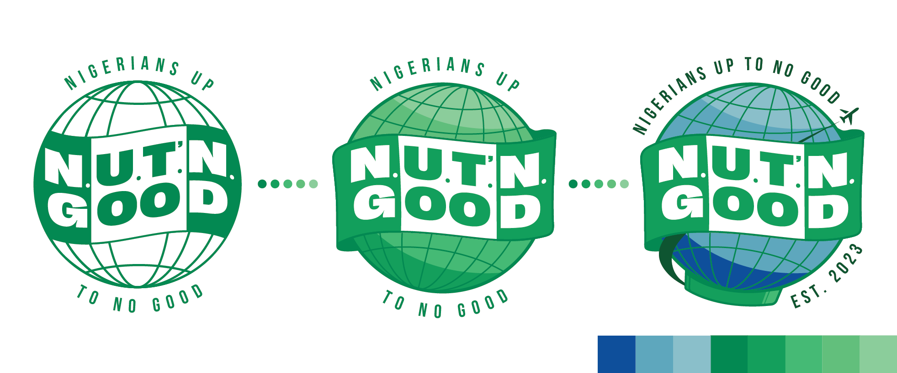
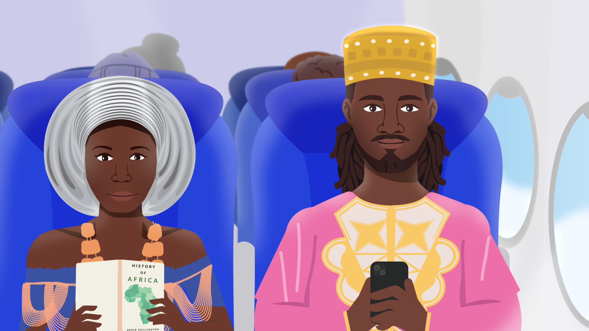

Up to No Good
I was approached to develop the brand identity for Up To No Good, an upstart travel podcast. The project involved creating a comprehensive visual identity—including a logo and color palette inspired by the Nigerian flag—as well as a full concept animation to serve as the podcast’s intro and a couple variations to be used for promotion on social media.
This would serve as another valuable opportunity to navigate the creative process from a freelance perspective.
Illustration / Branding / Animation
Problem
When the project began, Up To No Good existed purely as a concept. The challenge was to build a comprehensive brand foundation from the ground up that didn't just look "professional", but intentional. I needed to ensure the identity felt deeply and authentically rooted in Nigerian culture, translating abstract ideas of heritage into a concrete color system and set of motion graphics that stood alone in a crowded travel podcast market.
Design Intent
My intent was to bridge the gap between a raw idea and a tangible brand by using the Nigerian flag as the DNA for the project’s visual language. By grounding the color palette and typography in these cultural markers, I aimed to create a cohesive identity—spanning from a static logo to high-energy animation—that gave the podcast an immediate, credible, and culturally resonant presence.

Insight
By leaning into the inherent playfulness of the name Up To No Good, I saw it as an invitation to inject personality through character-driven storytelling and vibrant animation. However, I knew that for the brand to truly resonate, this mischief had to be balanced with cultural reverence. The insight was finding the sweet spot where playful character design and fluid movement could coexist with an uncompromising level of detail and respect for Nigerian identity.
